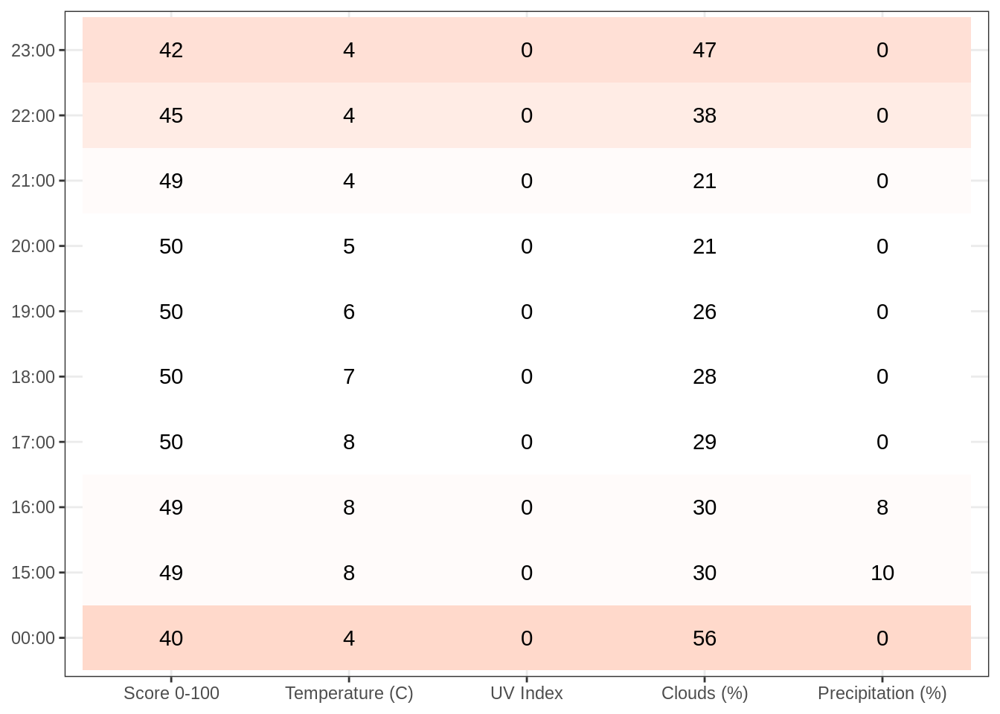
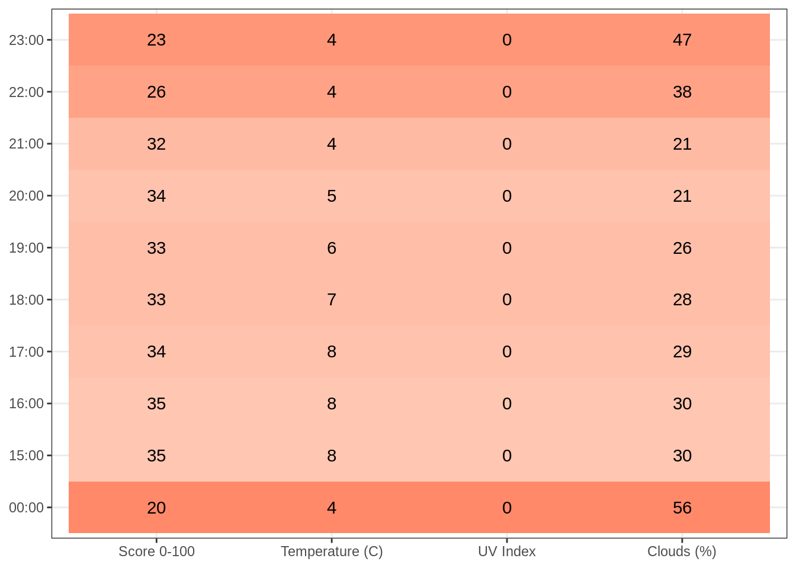
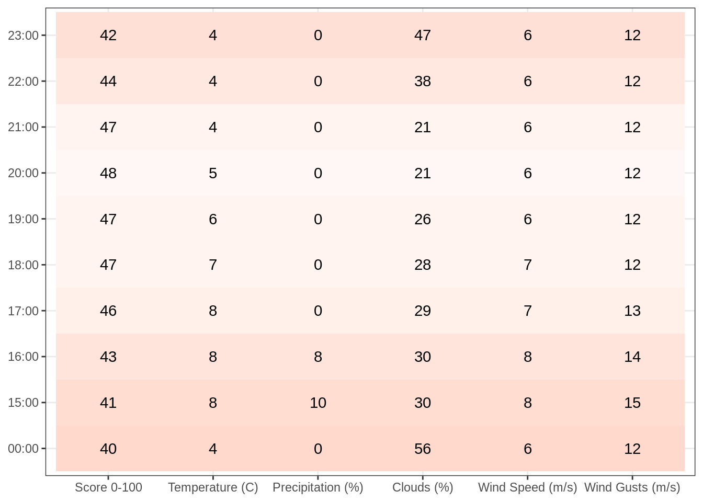
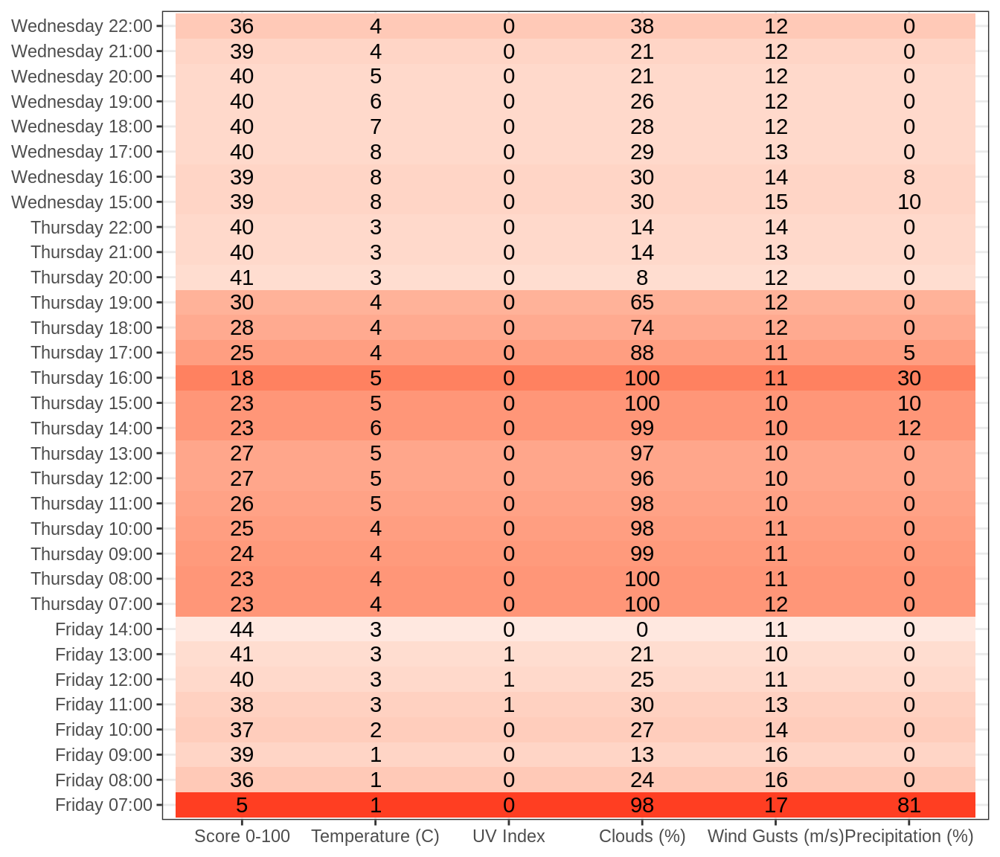

1
When Can We BBQ?
2
Openweather: Current Weather
2.1
Minutely Precipitation
3
Openweather: Hourly Forecast
3.1
Temperature
3.2
Pressure
3.3
Humidity
3.4
UVI Index
3.5
Cloud Coverage
3.6
Wind Speed (Avg)
3.7
Wind Degree
3.8
Probability of Precipitation
4
Openweather: Daily Forecast
4.1
UV Index
4.2
Rain
4.3
Probability of Precipitation
4.4
Clouds
4.5
Wind Gusts
4.6
Temperature
5
Suncalc: Daylight
5.1
Aarhus: Next 14 Days
5.2
Next 3 Months
5.3
2021
When Can We BBQ?
3
Openweather: Hourly Forecast
3.1
Temperature
3.2
Pressure
3.3
Humidity
3.4
UVI Index

3.5
Cloud Coverage

3.6
Wind Speed (Avg)

3.7
Wind Degree
3.8
Probability of Precipitation
